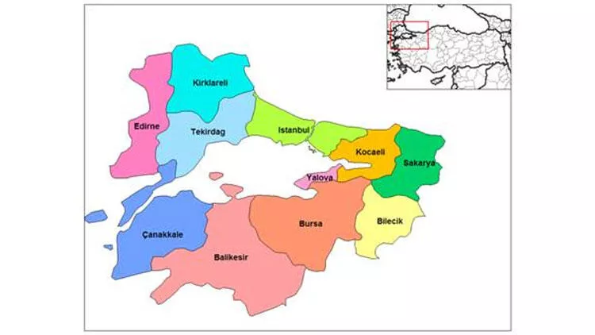

Köprü niteliği ile Asya ve Avrupa'yı birbirine bağladığı söylenebilir. Yaklaşık 67.000 km2'lik yüzölçüme sahip olup Türkiye'nin %8.5'iine karşı gelir.Bu bölgede sanayi, ticaret, turizm ve tarım gelişmiştir. Bölgedeki en gelişmiş sanayi İstanbul-Bursa-Kocaeli şehirlerinde olmakla birlikte bölgenin diğer yörelerinde de yaygın sanay faaliyetleri vardır.